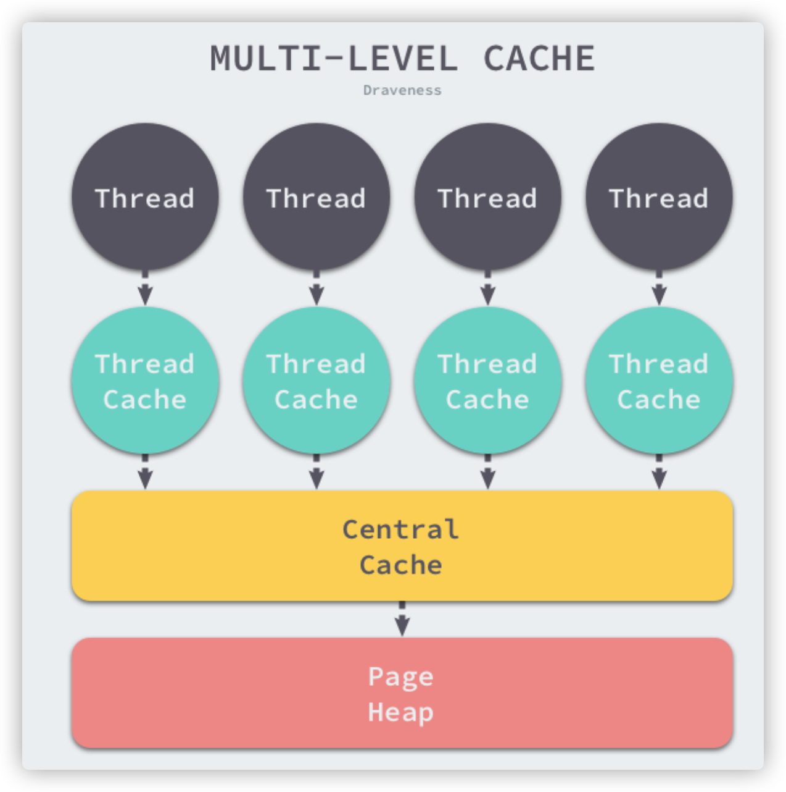
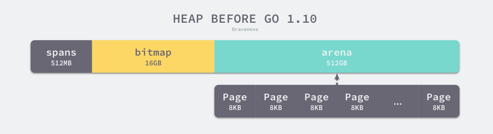
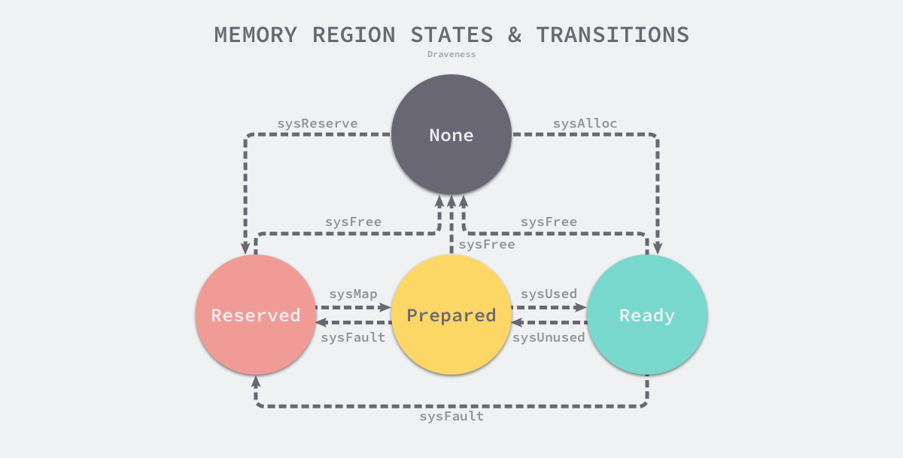
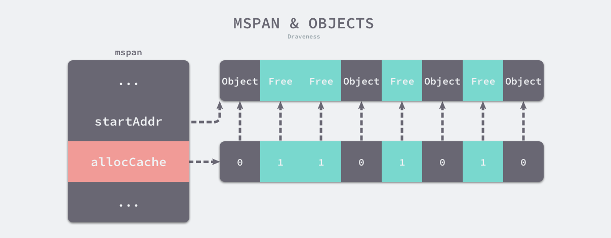

空闲链表法
空闲链表法会在内部会维护一个类似链表的数据结构。当用户程序申请内存时，空闲链表分配器会依次遍历空闲的内存块，找到足够大的内存，然后申请新的资源并修改链表。
因为不同的内存块通过指针构成了链表，所以使用这种方式的分配器可以重新利用回收的资源，但是因为分配内存时需要遍历链表，所以它的时间复杂度是 𝑂(𝑛)。
空闲链表分配器可以选择不同的策略在链表中的内存块中进行选择，最常见的是以下四种：
-
首次适应（First-Fit）— 从链表头开始遍历，选择第一个大小大于申请内存的内存块；
-
循环首次适应（Next-Fit）— 从上次遍历的结束位置开始遍历，选择第一个大小大于申请内存的内存块；
-
最优适应（Best-Fit）— 从链表头遍历整个链表，选择最合适的内存块；
-
隔离适应（Segregated-Fit）— 将内存分割成多个链表，每个链表中的内存块大小相同，申请内存时先找到满足条件的链表，再从链表中选择合适的内存块；
GO语言中的优化
1. 多规格内存管理
上面说过普通的空闲链表法的时间复杂度为𝑂(𝑛)，聪明的GO工程师们在此之上又做了不少优化，Go语言的内存分配器会根据申请分配的内存大小选择不同的处理逻辑，运行时根据对象的大小将对象分成微对象、小对象和大对象三种：
| 类别 | 大小 |
|---|---|
| 微对象 | (0, 16B) |
| 小对象 | [16B, 32KB] |
| 大对象 | (32KB, +∞) |
为什么这么处理呢？是因为程序实际运行的过程中，绝大多数的对象大小都在32KB以下，而申请的内存大小影响 Go 语言运行时分配内存的过程和开销，所以分别处理大对象和小对象有利于提高内存分配器的性能。
2. 多级内存管理
将内存分成不同的级别分别管理，TCMalloc 和 Go 运行时分配器都会引入线程缓存（Thread Cache）、中心缓存（Central Cache）和页堆（Page Heap）三个组件分级管理内存：

-
线程缓存使得在一个线程内分配内存无需加锁，减少锁竞争带来的性能损耗
-
当线程缓存不够用时，运行时会使用中心缓存作为补充解决小对象的内存分配，在遇到 32KB 以上的对象时，内存分配器会选择页堆直接分配大内存。
GO 1.10的虚拟内存布局
Go 语言程序的 1.10 版本在启动时会初始化整片虚拟内存区域，如下所示的三个区域 spans、bitmap 和 arena 分别预留了 512MB、16GB 以及 512GB 的内存空间，这些内存并不是真正存在的物理内存，而是虚拟内存

-
spans 区域存储了指向内存管理单元 runtime.mspan 的指针，每个内存单元会管理几页的内存空间，每页大小为 8KB；
spans区域存放的只是指针，实际mspan的内容还是在arena上的
-
bitmap 用于标识 arena 区域中的那些地址保存了对象，位图中的每个字节都会表示堆区中的 32 字节是否空闲；
所以arena的大小除以32等于bitmap的大小
-
arena 区域是真正的堆区，运行时会将 8KB 看做一页，这些内存页中存储了所有在堆上初始化的对象；
对于任意一个地址，可以根据 arena 的基地址计算该地址所在的页数并通过 spans 数组获得管理该片内存的管理单元
runtime.mspan
GO 1.11的虚拟内存布局

整个堆内存划分成了一块块小的heap arena(每个64MB)
这么做的原因？是因为C和Go混合使用时，无法维护堆区的内存是连续的。使用稀疏的内存布局不仅能移除堆大小的上限，还能解决 C 和 Go 混合使用时的地址空间冲突问题。不过因为基于稀疏内存的内存管理失去了内存的连续性这一假设，这也使内存管理变得更加复杂
瞄一眼heap arena的结构体
type heapArena struct {
bitmap [heapArenaBitmapBytes]byte
spans [pagesPerArena]*mspan
pageInUse [pagesPerArena / 8]uint8
pageMarks [pagesPerArena / 8]uint8
pageSpecials [pagesPerArena / 8]uint8
checkmarks *checkmarksMap
zeroedBase uintptr
}
- bitmap和spans同1.10版本的类似
- pageInUse
- zeroedBase记录了该结构体管理的内存的基地址
地址空间
因为所有的内存最终都是要从操作系统中申请的，所以 Go 语言的运行时构建了操作系统的内存管理抽象层，该抽象层将运行时管理的地址空间分成以下四种状态
| 状态 | 解释 |
|---|---|
| None | 内存没有被保留或者映射，是地址空间的默认状态 |
| Reserved | 运行时持有该地址空间，但是访问该内存会导致错误 |
| Prepared | 内存被保留，一般没有对应的物理内存访问该片内存的行为是未定义的可以快速转换到 Ready 状态 |
| Ready | 可以被安全访问 |

可以看出以上有好几个系统调用
对应代码：go/src/runtime/mem_linux.go
| 函数 | 作用 |
|---|---|
| runtime.sysAlloc | 会从操作系统中获取一大块可用的内存空间，可能为几百 KB 或者几 MB； |
| runtime.sysFree | 会在程序发生内存不足（Out-of Memory，OOM）时调用并无条件地返回内存； |
| runtime.sysReserve | 会保留操作系统中的一片内存区域，访问这片内存会触发异常； |
| runtime.sysMap | 保证内存区域可以快速转换至就绪状态； |
| runtime.sysUsed | 通知操作系统应用程序需要使用该内存区域，保证内存区域可以安全访问； |
| runtime.sysUnused | 通知操作系统虚拟内存对应的物理内存已经不再需要，可以重用物理内存； |
| runtime.sysFault | 将内存区域转换成保留状态，主要用于运行时的调试； |
内存管理组件

所有的 Go 语言程序都会在启动时初始化如上图所示的内存布局，
- 每一个处理器P都会分配一个线程缓存 runtime.mcache 用于处理微对象和小对象的分配
- mcache会持有
内存管理单元runtime.mspan - 每个类型的mspan都会管理特定大小的对象
- 当mspan中不存在空闲对象时，它们会从 runtime.mheap 持有的 134 个中心缓存 runtime.mcentral 中获取新的内存单元
- 中心缓存属于全局的堆结构体 runtime.mheap，它会从操作系统中申请内存。
mspan
type mspan struct {
startAddr uintptr // 起始地址
npages uintptr // 页数
freeindex uintptr
allocBits *gcBits
gcmarkBits *gcBits
allocCache uint64
state mSpanStateBox
spanclass spanClass
...
}
- startAddr 和 npages — 确定该结构体管理的多个页所在的内存，每个页的大小都是 8KB；
- freeindex — 扫描页中空闲对象的初始索引；
- allocBits 和 gcmarkBits — 分别用于标记内存的占用和回收情况；
- allocCache — allocBits 的补码，可以用于快速查找内存中未被使用的内存
- state被GC用到了，有四种状态：mSpanDead、mSpanInUse、mSpanManual 和 mSpanFree
- spanclass是一个 uint8 类型的整数，它的前 7 位存储着跨度类的 ID，最后一位表示是否包含指针。从跨度类的ID可以知道mspan管理的对象的规格和个数
spanclass的种类可参见源码: /go/src/runtime/sizeclasses.go
当向 runtime.mspan 申请内存时，它会使用 allocCache 字段以对象为单位在管理的内存中快速查找待分配的空间

mcache
type mcache struct {
...
alloc [numSpanClasses]*mspan // spans to allocate from, indexed by spanClass
...
tiny uintptr
tinyoffset uintptr
local_tinyallocs uintptr
}
runtime.mcache 是 Go 语言中的线程缓存，它会与线程上的处理器P一一绑定，主要用来缓存用户程序申请的微小对象。每一个线程缓存都持有 68 * 2 个 runtime.mspan，这些内存管理单元都存储在结构体的 alloc 字段中：
682的原因是sizeclass总共有68种，其中mcache持有含指针和不含指针的mspan各68个，总计就是682个

mcache刚刚被初始化时是不包含 runtime.mspan 的，只有当用户程序申请内存时才会从上一级组件获取新的 runtime.mspan 满足内存分配的需求。
func allocmcache() *mcache {
var c *mcache
systemstack(func() {
lock(&mheap_.lock)
c = (*mcache)(mheap_.cachealloc.alloc())
c.flushGen = mheap_.sweepgen
unlock(&mheap_.lock)
})
for i := range c.alloc {
c.alloc[i] = &emptymspan // 分配了个空的emptymspan
}
c.nextSample = nextSample()
return c
}
runtime.mcache.refill 会为mcache获取一个指定跨度类的mspan
func (c *mcache) refill(spc spanClass) {
s := c.alloc[spc]
s = mheap_.central[spc].mcentral.cacheSpan() // 看这里，mcache向mheap里的mcentral拿到了mspan
c.alloc[spc] = s
}
线程缓存中还包含几个用于分配微对象的字段，下面的这三个字段组成了微对象分配器，专门管理 16 字节以下的对象：
type mcache struct {
tiny uintptr
tinyoffset uintptr
local_tinyallocs uintptr
}
- tiny 会指向堆中的一片内存
- tinyOffset 是下一个空闲内存所在的偏移量
- local_tinyallocs 会记录内存分配器中分配的对象个数
mcentral
runtime.mcentral 是内存分配器的中心缓存，与线程缓存不同，访问中心缓存中的内存管理单元需要使用互斥锁
type mcentral struct {
spanclass spanClass
partial [2]spanSet
full [2]spanSet
}
每个中心缓存都会管理某个跨度类的内存管理单元，它会同时持有两个 runtime.spanSet，分别存储包含空闲对象和不包含空闲对象的内存管理单元。
上面说过，mcache间接调用了mcentral.cacheSpan 方法获取新的内存管理单元，具体内部细节：
- 调用 mcentral.partialSwept 从清理过的、包含空闲空间的 runtime.spanSet 结构中查找可以使用的内存管理单元；
- 调用 mcentral.partialUnswept 从未被清理过的、有空闲对象的 runtime.spanSet 结构中查找可以使用的内存管理单元；
- 调用 mcentral.fullUnswept 获取未被清理的、不包含空闲空间的 runtime.spanSet 中获取内存管理单元并通过 runtime.mspan.sweep 清理它的内存空间；
- 调用 runtime.mcentral.grow 从堆中申请新的内存管理单元；
- 更新内存管理单元的 allocCache 等字段帮助快速分配内存；
mheap
runtime.mheap 是内存分配的核心结构体，Go 语言程序会将其作为全局变量存储，而堆上初始化的所有对象都由该结构体统一管理，该结构体中包含两组非常重要的字段，其中一个是全局的中心缓存列表 central，另一个是管理堆区内存区域的 arenas 以及相关字段。
页堆中包含一个长度为 136 的 runtime.mcentral 数组，其中 68 个为跨度类需要 scan 的中心缓存，另外的 68 个是 noscan 的中心缓存
对象分配
堆上所有的对象都会通过调用 runtime.newobject 函数分配内存，该函数会调用 runtime.mallocgc 分配指定大小的内存空间，这也是用户程序向堆上申请内存空间的必经函数
总的分配逻辑
func mallocgc(size uintptr, typ *_type, needzero bool) unsafe.Pointer {
mp := acquirem()
mp.mallocing = 1
c := gomcache()
var x unsafe.Pointer
noscan := typ == nil || typ.ptrdata == 0
if size <= maxSmallSize {
if noscan && size < maxTinySize {
// 微对象分配
} else {
// 小对象分配
}
} else {
// 大对象分配
}
publicationBarrier()
mp.mallocing = 0
releasem(mp)
return x
}
微小对象分配逻辑
func mallocgc(size uintptr, typ *_type, needzero bool) unsafe.Pointer {
...
if size <= maxSmallSize {
if noscan && size < maxTinySize {
off := c.tinyoffset
if off+size <= maxTinySize && c.tiny != 0 {
x = unsafe.Pointer(c.tiny + off)
c.tinyoffset = off + size
c.local_tinyallocs++
releasem(mp)
return x
}
span := c.alloc[tinySpanClass]
v := nextFreeFast(span)
if v == 0 {
v, _, _ = c.nextFree(tinySpanClass)
}
x = unsafe.Pointer(v)
(*[2]uint64)(x)[0] = 0
(*[2]uint64)(x)[1] = 0
if size < c.tinyoffset || c.tiny == 0 {
c.tiny = uintptr(x)
c.tinyoffset = size
}
size = maxTinySize
...
}
...
}
...
}
- 线程缓存 runtime.mcache 中的 tiny 字段指向了 maxTinySize 大小的块，如果当前块中还包含大小合适的空闲内存，运行时会通过基地址和偏移量获取并返回这块内存
- 当内存块中不包含空闲的内存时，会先从线程缓存找到跨度类对应的内存管理单元 runtime.mspan，调用 runtime.nextFreeFast 获取空闲的内存；当不存在空闲内存时，我们会调用 runtime.mcache.nextFree 从中心缓存或者页堆中获取可分配的内存块
小对象分配逻辑
func mallocgc(size uintptr, typ *_type, needzero bool) unsafe.Pointer {
...
if size <= maxSmallSize {
...
} else {
var sizeclass uint8
if size <= smallSizeMax-8 {
sizeclass = size_to_class8[(size+smallSizeDiv-1)/smallSizeDiv]
} else {
sizeclass = size_to_class128[(size-smallSizeMax+largeSizeDiv-1)/largeSizeDiv]
}
size = uintptr(class_to_size[sizeclass])
spc := makeSpanClass(sizeclass, noscan)
span := c.alloc[spc]
v := nextFreeFast(span)
if v == 0 {
v, span, _ = c.nextFree(spc)
}
x = unsafe.Pointer(v)
if needzero && span.needzero != 0 {
memclrNoHeapPointers(unsafe.Pointer(v), size)
}
}
} else {
...
}
...
return x
}
- 确定分配对象的大小以及跨度类 runtime.spanClass；
- 从线程缓存、中心缓存或者堆中获取内存管理单元并从内存管理单元找到空闲的内存空间；
- 调用 runtime.memclrNoHeapPointers 清空空闲内存中的所有数据；
大对象分配逻辑
func mallocgc(size uintptr, typ *_type, needzero bool) unsafe.Pointer {
...
if size <= maxSmallSize {
...
} else {
var s *mspan
span = c.allocLarge(size, needzero, noscan)
span.freeindex = 1
span.allocCount = 1
x = unsafe.Pointer(span.base())
size = span.elemsize
}
publicationBarrier()
mp.mallocing = 0
releasem(mp)
return x
}
-
运行时对于大于 32KB 的大对象会单独处理，我们不会从线程缓存或者中心缓存中获取内存管理单元，而是直接调用 runtime.mcache.allocLarge 分配大片内存
-
runtime.mcache.allocLarge 会计算分配该对象所需要的页数，它按照 8KB 的倍数在堆上申请内存